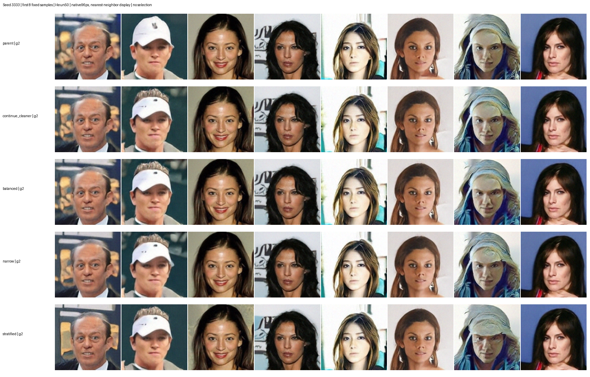
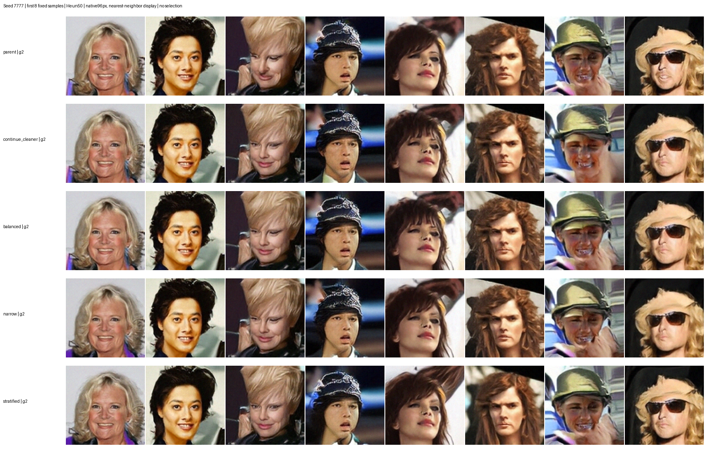

本轮 stratified 两个 seed 的平均 FID 与上一轮 cleaner 基本持平，尚不能认定质量提升。其他三个最终模型没有超过旧最佳；保留所有旧最佳及中间 checkpoint，切换实验方向。
| 实验 | FID seed3333 | FID seed7777 | 均值 |
|---|---|---|---|
| 上一轮 cleaner | 53.9571 | 53.3380 | 53.6475 |
| continue_cleaner | 54.4119 | 54.3577 | 54.3848 |
| balanced | 54.5724 | 53.9280 | 54.2502 |
| narrow | 54.4227 | 54.0241 | 54.2234 |
| stratified | 53.7247 | 53.5676 | 53.6461 |
评估为 1024 张生成图 / 1000 张验证图，固定 Heun50、guidance=2。小样本 FID 用于筛选，不代表显著性结论。以下均为固定前 8 张，无挑选、无图像增强；best-of-N 保持暂停。


四组分别为 batch1024 控制组及三个 EMA 窗口、batch2048、batch4096、学习率余弦衰减 5e-5→1e-5。各使用 16 GPU，从相同 stratified 完整状态继承，每组追加 409.6 万图片曝光；沿用已验证的 full compile。四任务已 RUNNING，共占用 64 GPU；四组均已产生训练指标，跳过更新数为 0；当前吞吐依次约 13125、13596、13770、13019 images/s。batch4096 已正常训练，尚无质量结论。更改通过 5 项测试，包括双进程断点续训一致性与 batch 切换。
实际训练图片为 3 万张，验证 1000 张；训练随机有放回抽样，每次重采噪声、时间并随机翻转。96px 当前完成谱系共 5324.8 万次曝光，约 1775 遍等效训练，未计 48px 预训练。单轮 819.2 万次曝光约 273 遍。新的噪声监督不等于新增人脸。下一项高价值实验是保留验证集，将训练集扩展到 10 万张或官方训练集，并按相同曝光量比较；同时可检查生成样本的训练集近邻，区分泛化与记忆。目前没有足够证据认定已经过拟合。